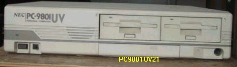

9801UV21の電源取替えなど

9801UV21をジャンクで入手しましたが、電源が壊れているようでまったく立ち上がりません。（冷却FANが回らない）そこで他のPC98の電源を持ってきて、仮に接続して生かしてみます。接続するのは＋５V、＋１２V、-12VそれにGROUNDの4種類です。赤の＋５Vと、黒のGROUND以外は、色の使い方が少し違っていることがありますが、テスターと実際の配線の観察で見分けることができます。9801BXの電源を使い、見事に起動しました。しかし、9801UVは筐体の厚さ9cmの薄型で、普通の電源盤は入りません。折りよく、EPSONのPC486Pという、コンパクト型PC98互換機の電源盤が余っていましたので、分解して基盤だけにすると、何とか収まります。ショートしないよう、基盤の下側と筐体ケースの内側の基盤にあたりそうな部分に、丈夫な絶縁シートをはり、適当に固定すると出来上がりです。容量が少し足りないのが気になりますが、その後トラブル無く動作しています。PC9801UV21は1986年製で私のところでは、最年長の98になります。
9801UV21には、3.5インチFDが2個ついています。これだけでも使えるのですが、一々フロッピーディスクを探したりするのが面倒なので、HDをつけることにしました。この時代のパソコンは、内部にHDを入れておくということがなかったので、9801UV21にも、もともと内蔵HDはついていないし、取り付けられるようにもなっていません。そこで登場するのが、外付けのSCSI HDです。なるべく古いものを使おうと思い、NEC純正のPC-HD 040R（40MB）を選びました。SCSIインターフェイスは、これまた古いNEC純正のPC-8901-55U（1991年製）を選び、
9801UV21に３つ付いている、Cバススロットの一番上に入れました。次に、FDでMS-DOSを立ち上げ、HDをフォーマットし、２０MB、１０MB、５MB、５MBの４個の区画を作りました。２０MBがAドライブで一般のDOSアプリケーション用、１０MBはBドライブでATOK６と一太郎Ver.３それにロータス123R2.3J用、次の５MBはCドライブで一太郎とロータスで作成したドキュメント用、最後の５MBはDドライブでN88BASIC（86）を入れてあります。このうちA、BドライブはDOS5.0Aのシステムをインストールしてあり起動ドライブになります。システムさえ入れれば、すべてのドライブを起動ドライブにすることも可能で、特に何もしなくても、マルチブートのシステムができます。この辺は、PC98の大変優れたところではないかと思っています。（DOS/V機ではWindowsNTとWindows95のマルチブートがデフォルトで可能）
上記の状態で、真夏に冷房のない部屋で使用していたら、起動時に渋滞したり、リセット後再起動しなくなったり、という故障が頻発するようになりました。熱対策ということで、本体のファンを比較的新しいものに取り替え、HDのファンはうるさいので取りはづしてあったものを、再度取り付けたところ、一応落ち着きました。しかし、何日か後、また起動渋滞が出たので、やむを得ず、SCSIカードを交換することにしたのですが、ここで問題があります。PC98用のSCSIカードなら何でもいい、というわけにはいかないのです。割と対応機種の広い、ロジテックのLHA301はだめで、LHA15も使えませんでした。使えたのは、TEXAのHA55BS3というカードで、PC-8901-55Uと比べ、起動が早く、安定して動作しています。PC-8901-55Uについては、NEC純正のHDでないと認識しない、ということが知られており、かって、この辺のことで、苦労された方が多いと聞いています。（NECチェックと言われ悪名が高かった）
PC-9801UV21の主な仕様など
型 名 ：PC-9801UV21
価 格 ：318000
発表日 ：87/06
CPUクロック ： V30 8M/10MHz切り替え
ROM ： N88-BASIC(86)及びモニタ96KB
標準RAM ： 384KB
最大ユーザーズメモリ ： 640KB
グラフィックVRAM容量 ： 256KB
グラフィックVRAM画素数： 640*400
グラフィックVRAM色数 ： 4096色中16色2画面
サウンドVRAM ： 16KB
テキストVRAM ： 12KB
拡張スロット数 ： 2
拡張スロット電源容量 + 5V ：0.8A
+12V ：0.06A
-12V ：0.07A
標準実装ドライブ FDD ：3.5インチ1M/640KFDD2-DRIVE
内蔵インタフェースコネクタ：1MFDDI/F プリンタI/F RS-232CI/F
：マウスI/F B/WCRTI/F デジタルCRTI/F
：アナログCRTI/F
漢字 ：標準:第一、第二オプション:拡張
サウンド機能 ：標準実装
カレンダ時計 ：μPD4990使用年サポートあり
ＶＣＣＩ適合 ：基準レベル10
使用条件 電圧 ：AC100V±10%
周波数：50/60
温度 ：10〜35
湿度 ：20〜80%(結露なし)
消費電力 標準 (W) ：100
最大 (W) ：120
エネルギー消費効率 (W) ：100
外形寸法 本 体 (mm) (W)：398 (D)：335 (H)：87
キーボード(mm) (W)：435 (D)：180 (H)：34
重量 本体 (Kg) ：7.8
(2002/12/24追記)
PC9801のページに戻る